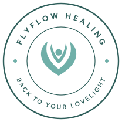

CNBC
Professional certification that informs how I guide every client through lasting change.
My story, my training, and why I do this work.


After 2020, I went through a healing crisis of my own. For three years I couldn’t walk. Life as I knew it stopped, and everything I had leaned on was tested: my body, my faith, my relationships and the way I saw myself.
In that season of stillness, patterns began to form. I saw that real healing happened when three connections were restored together: my connection to Heaven, my connection to the people around me, and my connection to myself. Those patterns became the JOY Connection Map.
I didn’t just want to get back to my old life. I wanted to fly.
Alongside my own recovery, I trained in these areas, and today my work is grounded in neurobehavioral healing. I help people understand how their thoughts, emotions, habits and bodies affect one another, and gently build new patterns that last.
I’m also a mother of six, a model, an artist, an actress and a humanitarian. Each of those roles has taught me something about giving, and about how easy it is to give away your own light. flyflowhealing exists so people can find theirs again.
Faith, lived experience and training in neurobehavioral, functional, relational and nutrition-based healing.
Professional certification that informs how I guide every client through lasting change.
Professional certification that strengthens the whole-person approach of my work.
Understanding how mind, emotions, habits and body influence one another, and building new patterns.
I know the weight of holding everything together for everyone. My work is for anyone who is ready to be held, too.
Held without judgment, at your own pace. Your story is welcome here, all of it.
Lighter in mind, heart and body, with room to breathe and to dream again.
Reconnected to Heaven, to the people you love, and to yourself.
Book a free, no-pressure 30-minute intake call. We’ll talk about where you are, where your light has dimmed, and whether we’re a good fit.